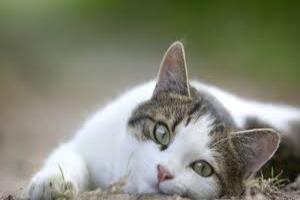

Que gatinho encantador! Um gatinho de olhos verdes com pelagem branca e orelhas manchadinhas é realmente adorável. A combinação de olhos verdes com pelagem branca costuma criar um visual cativante, enquanto as orelhas manchadinhas adicionam um toque especial de charme. Gatos com essa aparência costumam ter uma presença elegante e distinta. Tenho certeza de que quem adotar esse gatinho estará levando para casa um companheiro verdadeiramente especial e único!

voltar para principal